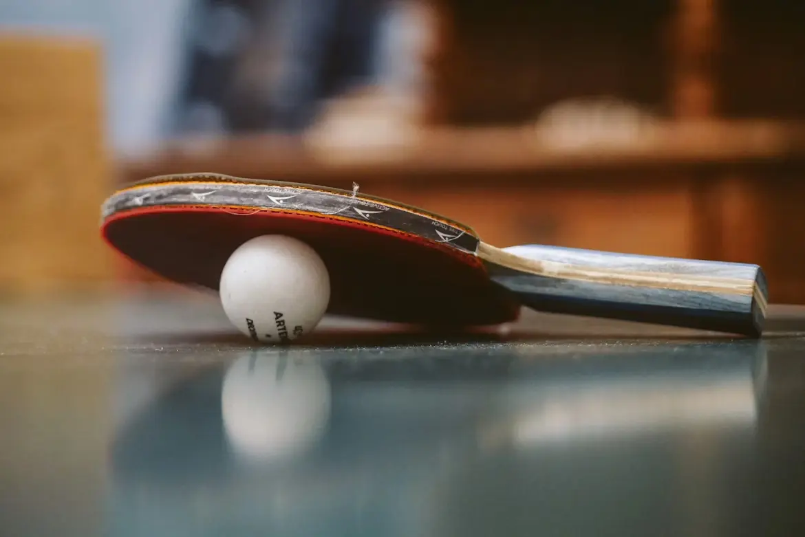

Discover and fall in love with table tennis!
About 🏓
Table tennis, also known as ping pong, is a fast-paced sport played on a small table with paddles and a lightweight ball. It combines quick reflexes, strategy, and precision, making it both exciting to watch and fun to play. Whether you're competing at a high level or just rallying with friends, table tennis offers endless challenges and rewards. Its global popularity and accessibility make it one of the most dynamic indoor sports in the world.
Did you know
- 🏓 Olympic debut: Table tennis became an official Olympic sport in 1988 at the Seoul Games.
- 🌍 Global reach: Table tennis is played by over 300 million people worldwide, making it one of the most popular indoor sports.
- 👀 Unusual ban: In the 1930s, the Soviet Union banned table tennis, claiming it was harmful to players’ eyes.
- ⚡ Speed record: The fastest recorded table tennis shot reached 112 km/h (69 mph).